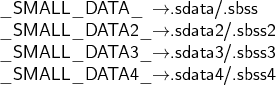

In addition to the output sections .sdata/.sbss, which use the address A0 for addressing, the
output sections
- .sdata2/.sbss2
- .sdata3/.sbss3
- .sdata4/.sbss4
can be defined in the linker script file for small-data addressing (SDA). These sections are
addressed as A1, A8, A9. Address register A1 is assigned to .sdata2/.sbss2, A8 to .sdata3/.sbss3
and A9 to .sdata4/.sbss4.
The small data sections can be located at an arbitrary location in the linker script file. Every
small data section is limited to a size of 64 kB.
For every small data section declared in the linker script file, a symbol, that points to the basis
address of the corresponding section, is generated by the linker. The symbols are
named:

By default all these symbols are initialized with the startign address of the assigned
section plus 215. However it is also possible to assign any value in the linker script (see
the example). The startup code uses these symbols to load the respective address
register.
By default A0 is always used for small data address register; A1, A8 and A9 are used only if the
small data sections .sdata2/sbss2, .sdata3/sbss3 or .sdata4/sbss4 are defined in the linker script
file and the sections are not empty.
Note:
The address register A0, A1, A8 and A9 are not overwritten by the
compiler.
The small data sections must be named either .sdata or .sdata.<name> and .sbss or
.sbss.<name>. If the content of user-defined data sections are to have small adresses, the
sections must have the section flag ”t” (for 10 bit relative addressing) or ”s” (for 16 bit relative
addressing) set and the name of the sections must have the prefix .sdata. or .sbss. (e.g.
.sdata.byte). Please note: There is a dot between the prefix and the section name! The allocation
of all small data section (default and user defined) to the output sections .sdata,
.sdata2, .sdata3, .sdata4, or .sbss, .sbss2, .sbss3, .sbss4 is defined in the linker invocation
file.
To achieve an efficient relative addressing, all 8 bit and 16 bit data must be combined within
the small data sections at compilation time. This means that in every module at least a small
data section with 8 bit data and one with 16 bit data has to be defined. The distinction
between 8 bit and 16 bit data is necessary in order to avoid memory gaps due to the
alignment.
Examples:
Small data addressing (10 bit) with 1 byte alignment:
#pragma section .sdata.byte 1 awt char c; #pragma section
Small data (10 bit) addressing with using attribute:
char c __attribute__((asection (".sdata.word", "a = 1", "f = awt")));
Data small addressing (16 bit) with 4 byte alignment:
#pragma section .sdata.word 4 aws int c; #pragma section
Small data (16 bit) addressing with using attribute:
int c __attribute__((asection (".sdata.word", "a = 4", "f = aws")));
Note:
The 10 bit and 16 bit relative addressing is specified by the flag t.
The 16 bit relative addressing is enabled with the flag s. The flag S is
reserved for string sections.
In these sections all data is addressed relatively to the section basis register. For 8 and 16 bit
data in particular, a 10 bit relative addressing will be generated.
Example
The following example assumes that the linker option -Wl,-T,<linker-file-name>,-Map,map
is used. The <linker-file-name> must be replaced by the user-defined linker description
file.
#include <stdio.h>
/⋆ These variables will be put in SDA2, provided the linker script
defines the .sdata2/.sbss2 output sections, and assigns the
input sections .{sdata,sbss}.foo to them. ⋆/
#pragma section .sdata.foo aws int sdata2_int1 = 42;
#pragma section #pragma section .sbss.foo as int sdata2_int2;
#pragma section /⋆ These variables will be put in SDA0. ⋆/
#pragma section .sdata int sdata_int1 = 0xdeadbeef;
#pragma section #pragma section .sbss
int sdata_int2; #pragma section int main () {
printf ("sdata2_int1 = %d (should be 42)\n", sdata2_int1);
printf ("sdata2_int2 = %d (should be 0)\n", sdata2_int2);
printf ("sdata_int1 = 0x%08x (should be 0xdeadbeef)\n", sdata_int1);
printf ("sdata_int2 = %d (should be 0)\n", sdata_int2); }
In the linker description file you can see the user-defined sections in __clear_table and
__copy_table.
PROVIDE(__clear_table = .) ;
LONG(0 + ADDR(.bss)); LONG(SIZEOF(.bss));
LONG(0 + ADDR(.sbss)); LONG(SIZEOF(.sbss));
LONG(0 + ADDR(.sbss2)); LONG(SIZEOF(.sbss2));
LONG(0 + ADDR(.zbss)); LONG(SIZEOF(.zbss));
LONG(-1); LONG(-1); PROVIDE(__copy_table = .) ;
LONG(LOADADDR(.data)); LONG(ABSOLUTE(DATA_BASE)); LONG(SIZEOF(.data));
LONG(LOADADDR(.sdata)); LONG(ABSOLUTE(SDATA_BASE));LONG(SIZEOF(.sdata));
LONG(LOADADDR(.sdata2)); LONG(ABSOLUTE(SDA2_BASE)); LONG(SIZEOF(.sdata2));
LONG(LOADADDR(.pcpdata)); LONG(ABSOLUTE(PRAM_BASE)); LONG(SIZEOF(.pcpdata));
LONG(LOADADDR(.pcptext)); LONG(ABSOLUTE(PCODE_BASE));LONG(SIZEOF(.pcptext));
LONG(-1); LONG(-1); LONG(-1);
In the following excerpt from the linker file, you can see the allocation of the input and
output sections. The input section .sdata.foo is transferred to the output section
.sdata2.
/⋆ Below are the definitions for SDA2. ⋆/
.sdata2 : AT(LOADADDR(.data) + SIZEOF(.data)) {
SDA2_BASE = ABSOLUTE(.) ; . = ALIGN(8) ; ⋆(.sdata.foo)
. = ALIGN(8) ; } > ext_dram . = ALIGN(8) ;
.sbss2 (NOLOAD) : { . = ALIGN(8) ; ⋆(.sbss.foo)
. = ALIGN(8) ; } > ext_dram . = ALIGN(8) ;
.sdata : AT(LOADADDR(.sdata2) + SIZEOF(.sdata2)) {
. = ALIGN(8) ; SDATA_BASE = ABSOLUTE(.) ;
PROVIDE(__sdata_start = .); ⋆(.sdata) ⋆(.sdata.⋆)
⋆(.gnu.linkonce.s.⋆) . = ALIGN(8) ; } > ext_dram
_edata = . ; PROVIDE(edata = _edata) ; . = ALIGN(8) ;
Note:
The .sdata2 and .sbss2 sections must be declared before the output
section .sdata in the linker description file, otherwise the wildcard
*.(.sdata.*) will put all the input section .sdata.* in the output section
.sdata.
Another example for the use of 10 bit and 16 bit relative addressing.
#pragma section .sdata.s10bit 2 awt char ch10 = 1; short s10 = 2;
int i10 = 3; #pragma section #pragma section .sdata.s16bit 4 aws
char ch16 = 4; short s16 = 5; int i16 = 6; #pragma section
void foo(void) { ch10 = 10; s10 = 10; i10 = 10;
ch16 = 16; s16 = 16; i16 = 16; }
The linker description file requires the definition of the section sdata2 in __copy_table.
LONG(LOADADDR(.sdata2)); LONG(ABSOLUTE(SDA2_BASE)); LONG(SIZEOF(.sdata2));
The SMALL_DATA2_ symbol must be an absolute address, therefore the symbol is not defined
within an output section. The user is responsible for setting the address in such a way that the
data is 10 or 16 bit addressable.
.sdata2 : AT(LOADADDR(.data) + SIZEOF(.data)) {
SDA2_BASE = ABSOLUTE(.) ; . = ALIGN(8) ;
⋆(.sdata.s10bit) ⋆(.sdata.s16bit) } > ext_dram
. = ALIGN(8) ; _SMALL_DATA2_ = SDA2_BASE ;
.sdata : AT(LOADADDR(.sdata2) + SIZEOF(.sdata2)) {
SDATA_BASE = ABSOLUTE(.) ; PROVIDE(__sdata_start = .);
⋆(.sdata) ⋆(.sdata.⋆) ⋆(.gnu.linkonce.s.⋆)
} > ext_dram . = ALIGN(8) ; _edata = . ;
PROVIDE(edata = _edata) ;
If you want to use 10 bit (± 512) relative addressing without defining an absolute symbol, you
can customise the linker script like that:
.sdata : AT(LOADADDR(.data) + SIZEOF(.data)) {
SDATA_BASE = ABSOLUTE(.) ; PROVIDE(__sdata_start = .);
⋆(.sdata) . = 32768 - 512 ; ⋆(.sdata.s10bit)
... } > ext_dram . = ALIGN(8) ; _edata = . ;
PROVIDE(edata = _edata) ;
Note:
This method is not recommended, since the user himself must take
care of the size of .sdata. This means the address of .sdata.s10bit is
not fixed, and therefore this method is error-prone.
If you use a .sbss section, you need a similar entry in the linker description file.